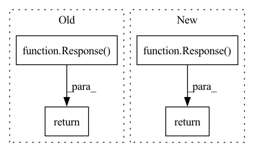

Pattern ID :22068

Before Change
http_action_config = mongo_processor.get_http_action_config(action_name=action,
bot=current_user.get_bot())
action_config = DataUtility.build_http_response_object(http_action_config, current_user.get_user(), current_user.get_bot())
return Response(data=action_config)
@router.get("/action/httpaction", response_model=Response)
async def list_http_actions(current_user: User = Depends(Authentication.get_current_user_and_bot)):
After Change
Returns configuration set for the HTTP action
http_action_config = mongo_processor.get_http_action_config(action_name=action, bot=current_user.get_bot())
return Response(data=http_action_config)
@router.get("/action/httpaction", response_model=Response)
async def list_http_actions(current_user: User = Depends(Authentication.get_current_user_and_bot)):
In pattern: SUPERPATTERN
Frequency: 5
Non-data size: 4
Instances
Fragment ID: 70000376
Project Name: digiteinfotech/kairon
Commit Name: d06326d361b167365810042523f9d6acb0057ef6
Time: 2021-12-10
Author: pandey.udit867@gmail.com
File Name: kairon/api/app/routers/bot.py
M Class Name: AnonimousClass
N Class Name: AnonimousClass
M Method Name: get_http_action(2)
N Method Name: get_http_action(2)
M Parent Class:
N Parent Class:
M File Name: kairon/api/app/routers/bot.py
N File Name: kairon/api/app/routers/bot.py
M Start Line: 701
M End Line: 704
N Start Line: 702
N End Line: 702
'>
Before Change
List end user logs.
return Response(
data=MeteringProcessor.get_logs(
current_user.account, start_idx, page_size, start_date, end_date,
metric_type=metric_type, bot=current_user.get_bot()
)
)
@router.post("/user/logs/{metric_type}", response_model=Response)
async def add_end_user_metrics(
After Change
"logs": logs,
"total": row_cnt
}
return Response(
data=data
)
@router.post("/user/logs/{metric_type}", response_model=Response)
async def add_end_user_metrics(
'>
Fragment ID: 70000377
Project Name: digiteinfotech/kairon
Commit Name: 1d87bfdfc7eaee32830f1794a794a4298fd8450c
Time: 2022-09-07
Author: 78532321+nupur-khare@users.noreply.github.com
File Name: kairon/api/app/routers/bot/metric.py
M Class Name: AnonimousClass
N Class Name: AnonimousClass
M Method Name: get_end_user_metrics(6)
N Method Name: get_end_user_metrics(6)
M Parent Class:
N Parent Class:
M File Name: kairon/api/app/routers/bot/metric.py
N File Name: kairon/api/app/routers/bot/metric.py
M Start Line: 39
M End Line: 44
N Start Line: 40
N End Line: 51
'>
Before Change
List model testing logs.
logs = ModelTestingLogProcessor.get_logs(current_user.get_bot(), log_type, reference_id, start_idx, page_size)
return Response(data=logs)
@router.get("/endpoint", response_model=Response)
async def get_endpoint(current_user: User = Security(Authentication.get_current_user_and_bot, scopes=ADMIN_ACCESS)):
After Change
"logs": logs,
"total": row_cnt
}
return Response(data=data)
@router.get("/endpoint", response_model=Response)
async def get_endpoint(current_user: User = Security(Authentication.get_current_user_and_bot, scopes=ADMIN_ACCESS)):
'>
Fragment ID: 70000378
Project Name: digiteinfotech/kairon
Commit Name: 1d87bfdfc7eaee32830f1794a794a4298fd8450c
Time: 2022-09-07
Author: 78532321+nupur-khare@users.noreply.github.com
File Name: kairon/api/app/routers/bot/bot.py
M Class Name: AnonimousClass
N Class Name: AnonimousClass
M Method Name: model_testing_logs(5)
N Method Name: model_testing_logs(5)
M Parent Class:
N Parent Class:
M File Name: kairon/api/app/routers/bot/bot.py
N File Name: kairon/api/app/routers/bot/bot.py
M Start Line: 611
M End Line: 611
N Start Line: 620
N End Line: 626
'>
Before Change
except Exception as e:
raise AppException(e)
message = "HTTP action deleted"
return Response(message=message)
@router.post("/action/slotset", response_model=Response)
async def add_slot_set_action(request_data: SlotSetActionRequest,
After Change
Deletes the http action config and story event
mongo_processor.delete_http_action_config(action, user=current_user.get_user(), bot=current_user.get_bot())
return Response(message="HTTP action deleted")
@router.post("/action/slotset", response_model=Response)
async def add_slot_set_action(request_data: SlotSetActionRequest,
'>
Fragment ID: 70000379
Project Name: digiteinfotech/kairon
Commit Name: a9f69b66045c33e8b6d1736b85281f09806aef11
Time: 2022-01-03
Author: pandey.udit867@gmail.com
File Name: kairon/api/app/routers/bot.py
M Class Name: AnonimousClass
N Class Name: AnonimousClass
M Method Name: delete_http_action(2)
N Method Name: delete_http_action(2)
M Parent Class:
N Parent Class:
M File Name: kairon/api/app/routers/bot.py
N File Name: kairon/api/app/routers/bot.py
M Start Line: 743
M End Line: 749
N Start Line: 743
N End Line: 744
'>
Before Change
Get data importer event logs.
logs = list(DataImporterLogProcessor.get_logs(current_user.get_bot()))
return Response(data=logs)
@router.post("/validate", response_model=Response)
async def validate_training_data(
After Change
"logs": logs,
"total": row_cnt
}
return Response(data=data)
@router.post("/validate", response_model=Response)
async def validate_training_data(
'>
Fragment ID: 70000375
Project Name: digiteinfotech/kairon
Commit Name: 1d87bfdfc7eaee32830f1794a794a4298fd8450c
Time: 2022-09-07
Author: 78532321+nupur-khare@users.noreply.github.com
File Name: kairon/api/app/routers/bot/bot.py
M Class Name: AnonimousClass
N Class Name: AnonimousClass
M Method Name: get_data_importer_logs(3)
N Method Name: get_data_importer_logs(1)
M Parent Class:
N Parent Class:
M File Name: kairon/api/app/routers/bot/bot.py
N File Name: kairon/api/app/routers/bot/bot.py
M Start Line: 905
M End Line: 910
N Start Line: 920
N End Line: 932